DFP4023-HUMAN COMPUTER INTERACTION
1.2.5 INTERACTION STYLES
MEMBER NAMES:
NURUL EZZAH LIYANA BINTI YUSNI
SITI NURARIFAH BINTI ZUBIR
distinct styles of interaction
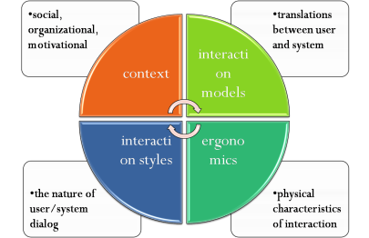
Common Interaction Styles
Command Line Interface
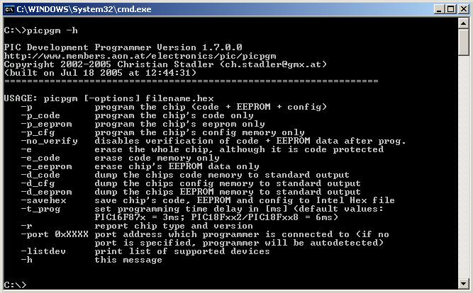
Command Line Interface
Way of expressing instructions to the computer directly
function keys, single characters, short abbreviations, whole words, or a combination
suitable for repetitive tasks
better for expert users than novices
offers direct access to system functionality
command names/abbreviations should be meaningful!
Typical example: the Unix system
Example Of CLI:
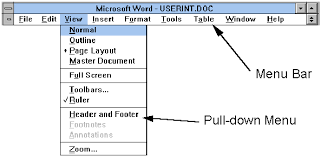
Point And Click Interface
used in ..
multimedia
web browsers
hypertext
just click something!
icons, text links or location on map
minimal typing
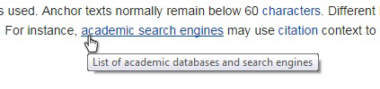
Three Dimensional (3D) Interface
virtual reality
‘ordinary’ window systems
highlighting
visual affordance
indiscriminate use
just confusing!
3D workspaces
use for extra virtual space
light and occlusion give depth
distance effects
WEB NAVIGATIONS
The process of navigating a network of information resources in the World Wide Web, which is organized as hypertext or hypermedia.
The user interface that is used to do so is called a web browser.
It’s a part of interface style
5 Styles Web Navigation
1.Text Links
The anchor text, link label, link text or link title which are visible and clickable text in a hyperlink
Example: 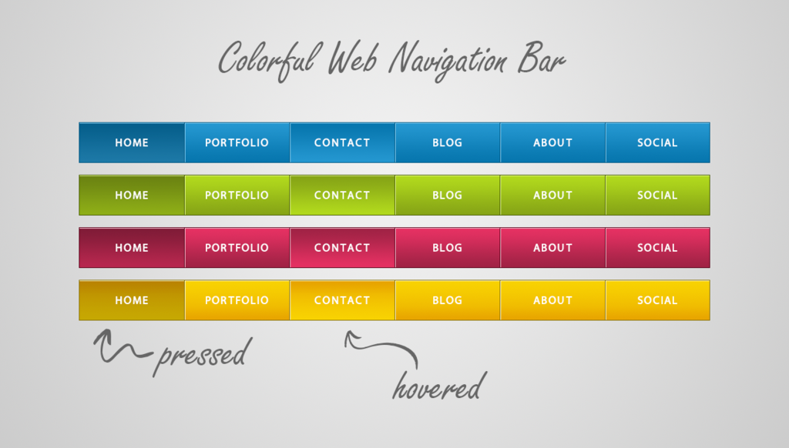
2.Navigation Bar
A navigation bar or (navigation system) is a section of a website or online page intended to aid visitors in travelling through the online document.
Example:
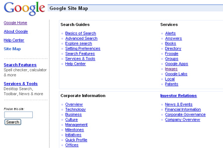
3.Sitemap
A site map (or sitemap) is a list of pages of a web site accessible to crawlers or users.
It can be either a document in any form used as a planning tool for Web design, or a Web page that lists the pages on a Web site, typically organized in hierarchical fashion.
Example: 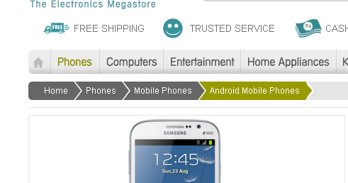
4.Breadcrumbs
Breadcrumbs or breadcrumb trail is a navigation aid used in user interfaces ( sequence of page navigation to keep track page location).
It allows users to keep track of their locations within programs or documents. The term comes from the trail of breadcrumbs left by Hansel and Gretel in the popular fairy tale
Example: 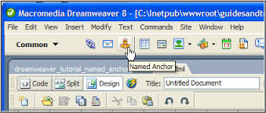
5.Name Anchor
An anchor element is called an anchor because web designers can use it to anchor a URL to some text on a web page.
When users view the web page in a browser, they can click the text to activate the link and visit the page whose URL is in the link
Example: 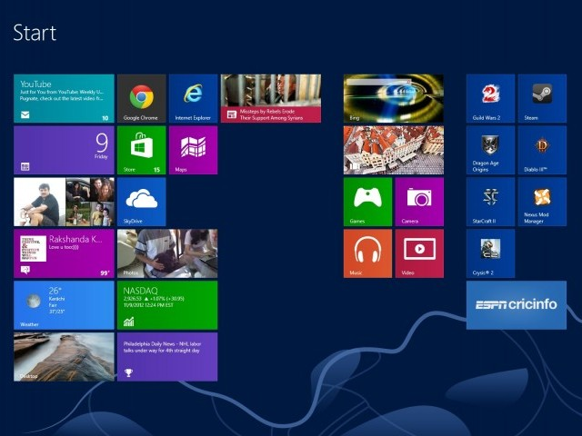
ELEMENTS OF THE WIMP INTERFACE
- windows, icons, menus, pointers
- +++
- Buttons, toolbars,palettes,dialog boxes
Windows
Areas of the screen that behave as if they were independent
can contain text or graphics
can be moved or resized
can overlap and obscure each other, or can be laid out next to one another (tiled)
scrollbars
allow the user to move the contents of the window up and down or from side to side
title bars
describe the name of the window
Window Interface: 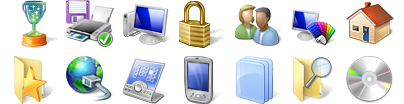
Icons
small picture or image
represents some object in the interface
often a window or action
windows can be closed down (iconised)
small representation fi many accessible windows
icons can be many and various
highly stylized
realistic representations.
Pointers
important component
WIMP style relies on pointing and selecting things
uses mouse, trackpad, joystick, trackball, cursor keys or keyboard shortcuts
wide variety of graphical images
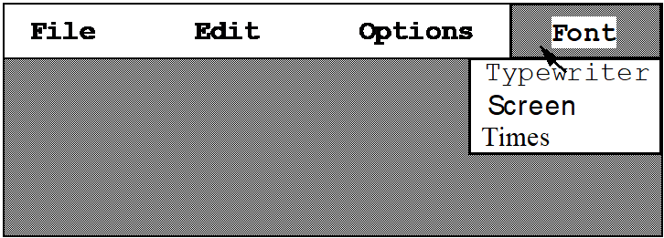
Menus
Choice of operations or services offered on the screen
Required option selected with pointer 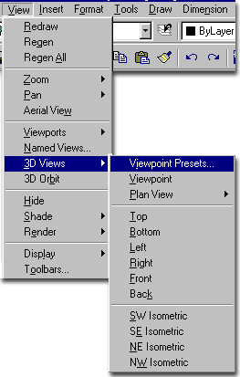
problem – take a lot of screen space
solution – pop-up: menu appears when needed
Kind of Menus
Menu Bar at top of screen (normally), menu drags down
pull-down menu - mouse hold and drag down menu
drop-down menu - mouse click reveals menu
fall-down menus - mouse just moves over bar!
Contextual menu appears where you are
pop-up menus - actions for selected object
pie menus - arranged in a circle
easier to select item (larger target area)
quicker (same distance to any option)
Example: 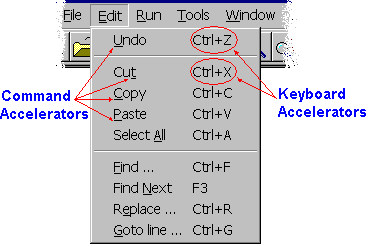
Menus Extras
Cascading menus
hierarchical menu structure
menu selection opens new menu
and so in ad infinitum
Keyboard accelerators
key combinations - same effect as menu item
two kinds
active when menu open – usually first letter
active when menu closed – usually Ctrl + letter
Keyboard accelerators
Example: 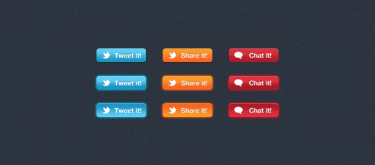
Menus Design Issues
which kind to use
what to include in menus at all
words to use (action or description)
how to group items
choice of keyboard accelerators
Buttons
individual and isolated regions within a display that can be selected to invoke an action 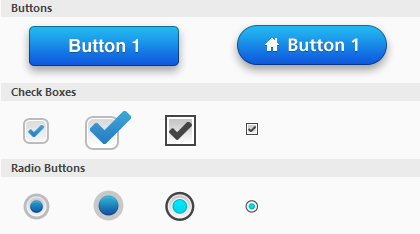
Special kinds
radio buttons
– set of mutually exclusive choices
check boxes
– set of non-exclusive choices
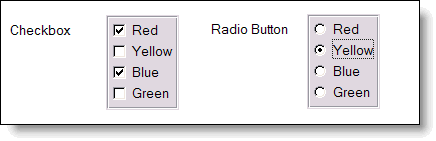
Radio Button VS Check Boxes
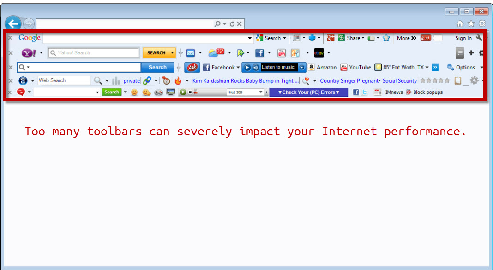
Toolbars
long lines of icons …
… but what do they do?
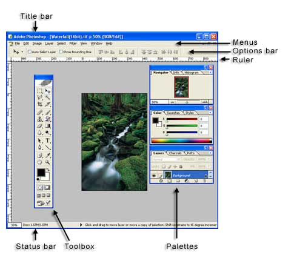
fast access to common actions
often customizable:
choose which toolbars to see
choose what options are on it
Palettes and Tear-off Menus
Palettes is a little windows of actions
collections of user interface objects contain items like text fields, data tables, sliders, pop-up menus, etc.
Problem
menu not there when you want it
Solution
palettes
shown/hidden via menu option
e.g. available shapes in drawing package
tear-off and pin-up menus
Tear-off: a pop-up menu that you can move around the screen like a window
menu ‘tears off’ to become palette
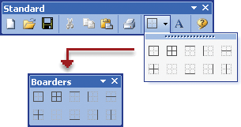 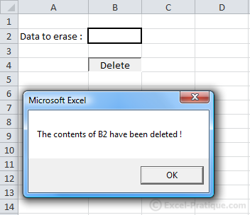
Palettes tear-off menus
Dialogue Boxes
information windows that pop up to inform of an important event or request information.
e.g: when saving a file, a dialogue box is displayed to allow the user to specify the filename and location. Once the file is saved, the box disappears.
1. Which one is the main interaction style are used,each of them will considered in a special part of the lesson
A. Graphical user interface
B. Graphical direct manipulation
C. Dialogue boxes
D. icons
2. Give the set of options(option visible) displayed on the screen in menus.
A. sensible grouping is needed
B. combination (eg. Mouse plus accelerator)
C. numbers,letters,arrow,keys,and mouse
D. rely on recognition so names should be meaningful
3. what does natural language processing include?
A. Signal processing,syntactic analysis,symentic analysis,pragmatics
B. Signal processing,syntactic keyword,symentic analysis,pragmatics
C. Signal processing,syntactic analysis,symentic analysis
D. syntactic analysis,symentic analysis,pragmatics
4. Areas of the screen that behave as if they were independent, What type can contain in windows?
A. word only
B. number only
C. text and graphics
D. special character and number
5. what the definition of Navigation bar?
A. Menu Bar at top of screen (normally), menu drags down
B. The process of navigating a network of information resources in the World Wide Web, which is organized as hypertext or hypermedia.
C. A navigation bar is only button that we used on laptop or pc.
D. Choice of operations or services offered on the
6. which one is styles of web navigation
A. sitemap
B. icons
C. dialogue boxes
D. symemtic analysis
7. What is the elements of the WIMP interface?
A .windows, number, pointers
B. Only number
C. Graphics,number,keyword
D. windows, icons, menus, pointers
8. What the sophisticated of variation of form filling?
A. Familiar to user
B. grid of cells contain a value or a formula
C. suitable for repetitive task
D. offers direct access to system functionality
9. represents some object in the interface of icons ?
A. often a window or action
B. user led through interaction via series of questions
C. used to retrieve information from database
D. used to convert information from database
10. What techniques can be used to guide user attention to important information on the interface?
A. Layouts and animation
B. Colour
C. Flashing
D. Auditory warning
CONGRATS! PROUD OF YOURSELF
Right =
Wrong =